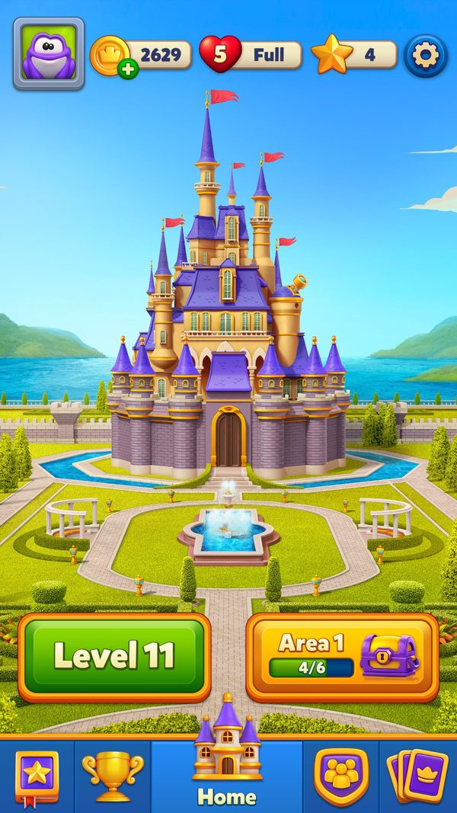
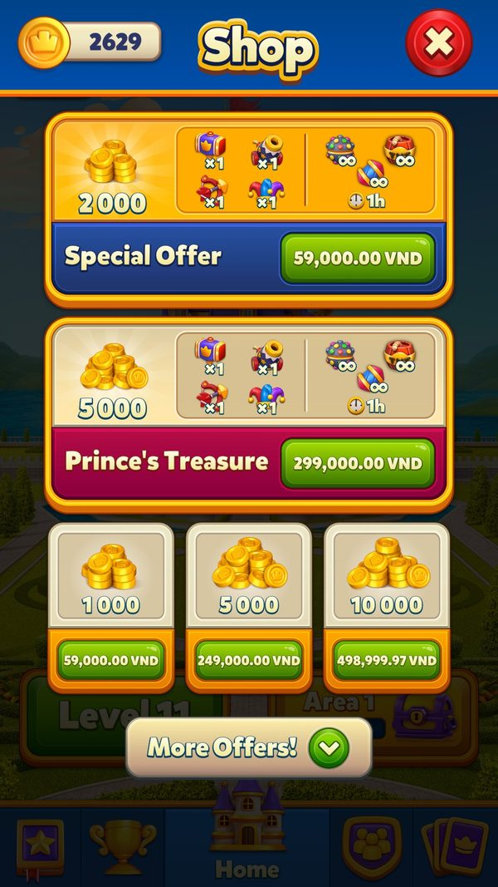

Khung offer: nhận cấu hình, xếp chỗ, bật popup
Hàng chục offer chạy song song được nhận cấu hình, xếp chỗ trên Home, Shop, slider bế tắc, tự bật popup và hết hạn như thế nào.
Bài này giải thích bộ khung chung mà mọi offer của Royal Match dùng: server gửi gì, offer đứng ở đâu, khi nào tự bật, khi nào biến mất. Ví dụ dựa trên tài khoản test level 11 (06/10/2026), cùng config Ladder Offer và Royal Pass thật mà tài khoản này đã nhận. Đọc khoảng 8 phút; chi tiết từng offer ở các bài Ladder, cá nhân hoá, giữ chân và pass.
- ✅ Giá trị thật: lấy thẳng từ code, config server thật, save hoặc ảnh chụp khi chơi.
- 🧪 Ví dụ minh họa: con số đầu vào giả định để thấy cơ chế chạy; cách tính trong ví dụ là cách tính thật trong code.
- Tên kỹ thuật (class, method, key) để trong ngoặc hoặc ở dòng bằng chứng, để tra code khi cần.
Tóm tắt nhanh
- Server gửi config offer từ rất sớm, nhưng client giữ kín tới đúng level. Mỗi offer có mốc mở riêng.Ví dụ ✅ Tài khoản level 11 đã nhận đợt Ladder (Id 444, còn ~4,8 ngày) và Royal Pass (Id 213, còn ~21,8 ngày), nhưng Home không có icon nào: Ladder mở ở level 35, Royal Pass ở level 37.
- Ba thang ưu tiên độc lập. Icon Home, thẻ Shop, slider trong popup bế tắc; số nhỏ đứng trước, số 0 là ẩn.Ví dụ ✅ Config Ladder thật: Home 30 / Shop 30 / slider 0 → không bao giờ vào slider. Royal Pass thật: 20 / 20 / 100 → đứng đầu Home nhưng gần cuối slider.
- Server gửi 0 cả ba thì client tự dùng số mặc định. Offer không bị mất chỗ khi config thiếu.Ví dụ ✅ Mặc định trong code: Special Offer 70/70/70, Team Offer 80/10/0, No-Ads 200/15/20; tên lạ không có trong bảng thì 60.
- Trong Shop, offer luôn đứng trên gói thường. Offer có ưu tiên 5–75; bundle 3000; gói coin 4000.Ví dụ 🧪 Ở level 40 có cả Royal Pass và Ladder: Shop xếp Royal Pass (20) → Ladder (30) → Special Offer bundle → gói coin.
- Popup tự bật phải chờ người chơi chơi trước. Mở app chưa vào màn thì không có popup offer nào.Ví dụ 🧪 Mở game lúc 8:00, chưa chơi → không popup. Chơi 1 màn, về Home → popup Ladder bật (lần đầu trong ngày). Về Home lần nữa lúc 9:00 → không bật lại, chỉ còn icon.
- Mỗi offer tự giãn nhịp. Không có trần chung cho cả phiên.Ví dụ ✅ Ladder: 1 popup/ngày. Special Offer: sống 48 giờ, nhắc sau 24 giờ. Team Offer: sống 24 giờ, nhắc sau 12 giờ. Journey: giới thiệu tối đa 3 lần.
- Tiến độ offer được nén bit và đồng bộ server. Đổi máy hay cài lại vẫn đúng bậc.Ví dụ ✅ OfferProgress: 9 bit mã đợt (512 đợt quay vòng), 5 bit bậc (tối đa 32), 2 bit tuỳ chọn, 31 bit hạn.
Ví dụ xuyên suốt: hai đợt offer thật đi qua tài khoản level 11
✅ Tài khoản test 2712389101, LDPlayer 06/10/2026, level 11. Server đã gửi Ladder (Id 444, config v327) và Royal Pass (Id 213, config v90). Dòng 🧪 giả định cùng người chơi lên level 40 khi hai đợt này (hoặc đợt kế với cùng priority) còn chạy; luật hiển thị là luật thật.
| Lúc | Người chơi làm gì | Game phản hồi | Kết quả |
|---|---|---|---|
| Mở game | - | Ping trả về LadderOfferInfo (còn 411.192.896 ms) và RoyalPassInfo (còn 1.879.992.896 ms); danh sách offer động rỗng | ✅ Client ghi priority Ladder 30/30/0 và Royal Pass 20/20/100 vào bảng ưu tiên |
| Ở Home | Nhìn màn chính | Không có icon offer nào, chỉ nút Level 11 và Area 1 | ✅ Ladder cần level 35, Pass cần 37 |
| Mở Shop | Bấm nút coin | Ô đầu là bundle Special Offer 59.000₫ (gói cố định của Shop, không phải offer server) | ✅ Không có thẻ offer nào chen trên bundle |
| Hết lượt ở level 11 | Hết nước khi còn mục tiêu | Popup chỉ có Play On 900 coin; không có slider offer | ✅ Slider Royal Favor cần level > 99 và cài game > 7 ngày |
| 🧪 Level 40, mở game | Chưa chơi màn nào | Không popup (chưa vào màn trong phiên); icon Royal Pass (20) đứng trước Ladder (30) | 🧪 Thứ tự icon theo số nhỏ trước |
| 🧪 Thắng 1 màn, về Home | - | Popup Ladder tự bật (lần đầu trong ngày) | 🧪 Ghi ngày đã bật vào LadderOfferAutoDialogLastSeenDate |
| 🧪 Về Home lần 2 cùng ngày | - | Không bật lại | 🧪 Ladder chỉ còn icon và thẻ Shop |
| 🧪 Hết lượt ở level 40 | - | Slider (nếu đủ điều kiện) có Royal Pass ở cuối (100); Ladder không vào (0) | 🧪 Pass được bán như mua dài hạn, không như phao cứu ván |
Server đẩy dữ liệu sớm để khi người chơi vừa chạm mốc level thì offer hiện ngay, không phải chờ tải. Việc ẩn hay hiện nằm hoàn toàn ở client.





Ảnh chụp minh họa (3)
Ảnh chụp từ game thật trên LDPlayer. Bấm ảnh để phóng to, phím ← → để chuyển ảnh.
Luồng hoạt động (12 bước)
Tóm lại: Server gửi đợt offer → client so đợt, lưu config → đăng ký 3 chỗ đứng → chờ đủ level và tải xong hình → icon/thẻ Shop/slider → popup tự bật sau khi chơi → mua từng bậc → hết hạn thì dọn
- 1Server gửi đợt offerServerMỗi offer có gói tin riêng trong phản hồi Ping.Ví dụ ✅ Ping của tài khoản level 11: LadderOfferInfo {Id 444, ConfigVersion 327}, RoyalPassInfo {Id 213, ConfigVersion 90}, DynamicOfferAllInfo rỗng.
facts/runtime/decoded_new/004_1_PingResponse.json; OfferManager.UpdateInfo; LadderOfferManager.UpdateInfo - 2So đợt, đợt mới thì xoá tiến độ cũClientMã đợt khác thì làm lại từ đầu; hạn đổi thì chỉ cập nhật hạn.Ví dụ 🧪 Đang ở bậc 12 của đợt 443, server gửi đợt 444 → tiến độ về 0, log 'Reset progress for new event: 444'.
LadderOfferManager.UpdateInfo; TeamOfferManager.UpdateInfo; OfferManager.ClearOfferInfo - 3Đăng ký 3 chỗ đứngClientConfig có 3 số ưu tiên. Cả ba bằng 0 thì dùng số mặc định; còn lại ghi số server vào bảng ưu tiên trên máy.Ví dụ ✅ Royal Pass gửi 20/20/100 → ghi đúng ba số. 🧪 Special Offer gửi 0/0/0 → client tự ghi 70/70/70.
OfferManager.UpdateConfig; RoyalPassManager.UpdateConfig; PriorityDataHelper.AddPriority; PriorityTable - 4Tải hình trước khi hiệnClientOffer chỉ hiện khi gói hình đã tải xong. Special Offer bắt đầu tải từ level 95 để kịp mở ở 100.Ví dụ 🧪 Mạng yếu, gói hình Ladder chưa tải xong → icon chưa hiện dù đã level 35.
OfferManager.GetBundleAvailableLevel = 95; LadderOfferManager.IsBundleDownloaded; DynamicOfferManager.TryInitBundles - 5Kiểm tra điều kiện mởClientMỗi offer có mốc level riêng, có thể bị server tắt, và phải còn hạn.Ví dụ ✅ Mốc trong code: Team 24 (và phải có đội), Ladder 35, Pass 37, Special/Journey 100, level cực khó 149. Level 11 chưa qua mốc nào.
TeamOfferManager.OfferUnlockLevel; LadderOfferManager.LadderOfferUnlockLevel; OfferManager.OfferUnlockLevel; *DisabledByBackend - 6Xếp icon trên HomeClientIcon xếp theo ưu tiên Home, số nhỏ trước. Vài sự kiện đội chen vào giữa. Journey đã mua bị đẩy lùi xuống.Ví dụ ✅ Mặc định: Royal Pass 20, Weekly Pass 21, sự kiện MissionPursuit/MissionControl 25, sự kiện đội 26, Journey 29 (đã mua: 35), Ladder 30, Special Offer 70, Team Offer 80, No-Ads 200.
IconsView.FillRightIconPriorityList; PriorityDataHelper.GetIconPriority - 7Thử nghiệm ẩn iconServerMột nhóm A/B ẩn mọi icon offer trên Home; một biến thể khác ẩn tất cả trừ Ladder.Ví dụ 🧪 Người chơi ở nhóm 'ẩn trừ Ladder' → Home chỉ còn icon Ladder; Special, Team, Dynamic vẫn có trong Shop.
AbTestHelper.IsOffersHomeSceneIconHideAbEnabled / ...ExceptLadderOfferAbEnabled - 8Popup tự bậtClientChỉ bật khi người chơi đã vào màn ít nhất 1 lần trong phiên, không có bot chơi hộ và không có popup khác đang mở. Mỗi offer có luật nhắc riêng.Ví dụ 🧪 Ladder: 7:30 thắng màn đầu, về Home → popup bật; 12:00 về Home lần nữa → không bật (đã bật trong ngày).
AEventManager.get_CanShowAutoPopup (IsGameSceneLoadedOnce, bot); LadderOfferManager.TryAddStartDialog; ShouldAddAutoDialogIfHasAutoDialogBefore = false - 9Xếp thẻ trong ShopClientThẻ offer xếp theo ưu tiên Shop rồi mới tới bundle (3000) và gói coin (4000).Ví dụ ✅ Mặc định: Coin Shop 5, Team Offer 10, No-Ads 15, Royal Pass 20, Weekly Pass 21, Journey 25, Ladder 30, offer mùa 56–67, Special Offer 70, Royal Boost 75.
APricingStrategy.GetLongList; PriorityDataHelper.GetDefaultShopPriority - 10Slider trong popup bế tắcClientPopup hết lượt và popup thiếu mạng có slider offer xếp theo ưu tiên thứ ba. Số 0 thì không vào.Ví dụ ✅ Mặc định: Royal Favor 1, Coin Shop 5, No-Ads 20, Journey 73, Royal Boost 75, Royal Pass 100, Weekly Pass 101; Ladder và Team = 0.
PriorityDataHelper.GetRoyalFavorPriority / GetDefaultFavorPriority; RoyalFavorOfferSliderView - 11Mua một bậcPlayerMã sản phẩm cho biết offer nào; game lấy nội dung bậc hiện tại, cộng thưởng, tăng bậc, gửi thống kê.Ví dụ 🧪 Mua bậc Mini của Ladder (ladder.3, 99.000₫) → nhận 1 TNT + 3.000 coin + 1 Hammer → bậc tăng 4 → 5 → sự kiện OfferClaim kèm trigger 'Auto'.
PurchaseHelper.GetShopPackageConfigByProductId; OfferManager.FinishPurchase / SetStepAsPurchased / SendClaimEvent - 12Hết hạn hoặc mua hếtClientIcon và thẻ biến mất, trạng thái popup bị xoá. Ladder có thông báo trước 1 ngày.Ví dụ ✅ Đợt Ladder 444 lúc chụp còn ~4,8 ngày; khi còn 1 ngày máy nhận thông báo đẩy 'LadderOfferJungle1DayTitle'.
OfferManager.get_IsRemainingTimeFinished / IsCompleted; LadderOfferManager.ClearLadderOfferInfo / GetNotificationTitle
Nhánh & ngoại lệ
| Khi | Thì | Ví dụ | Bằng chứng |
|---|---|---|---|
| Server gửi ưu tiên 0 ở một chỗ | Offer vắng mặt ở chỗ đó. | ✅ Ladder thật có slider = 0 nên không bao giờ hiện trong popup hết lượt. | User_LadderOfferConfig.json (offerPriorityFavor 0) |
| Mở bằng deeplink | Bỏ qua điều kiện 'đã chơi màn', vẫn kiểm tra hướng dẫn và màn Home. | 🧪 Bấm link quảng cáo 'ladderoffer' lúc vừa mở game → popup Ladder mở ngay. | LadderOfferManager.TryAddStartDialog (origin 'deeplink'); OfferOpenTrigger.DeepLink = 4 |
| Cài lại game giữa đợt Special Offer | Game xin lại config đợt đang chạy từ server. | 🧪 Đang ở bậc 3, cài lại → nhận lại config, vẫn ở bậc 3. | OfferManager.GetConfigForReinstall / UpdateSpecialOfferInfo |
| Người chơi cũ chưa có tiến độ Special Offer | Bậc đầu được chọn lớn hơn gói to nhất họ từng mua. | 🧪 Từng mua bundle.20 → bỏ qua các bậc giá thấp hơn mức đó. | OfferManager.CalculateFirstStepForOldVersions |
| Đang có Weekly Pass mà server gửi Royal Pass | Từ chối Royal Pass; hai pass không chạy cùng lúc. | 🧪 Đang giữa Weekly Pass → Royal Pass mới chờ tới khi Weekly xong. | RoyalPassManager.ShouldUpdateInfo; WeeklyPassManager.ShouldUpdateInfo |
| Server tắt một offer giữa đợt | Icon và thẻ biến mất ngay, không cần cập nhật app. | 🧪 Ladder lỗi giá → server tắt → log 'Disable ladder offer 444 from backend'. | LadderOfferManager.LadderOfferDisabledByBackend |
| Đang mua dở mà game bị tắt | Offer động ghi giao dịch dở vào bảng SQLite để phát bù đúng offer. | 🧪 Offer động chỉ sống 6 giờ, mua xong thì crash → mở lại vẫn nhận đúng gói đó. | DynamicOfferManager.AddOfferToPurchaseList / FillPurchaseListFromLocal |
Bảng ưu tiên mặc định
Tóm lại: số nhỏ đứng trước → 0 là ẩn → server gửi 0 cả ba thì dùng bảng này
| Offer | Home | Shop | Slider bế tắc | Config thật | Ví dụ |
|---|---|---|---|---|---|
| Royal Favor | - | - | 1 | - | 🧪 Có Royal Favor thì nó luôn là thẻ đầu slider |
| Coin Shop (Golden Offers) | 100 | 5 | 5 | (server, chưa đọc được) | 🧪 Level 100+: đứng đầu Shop |
| Team Offer | 80 | 10 | 0 | (server, chưa đọc được) | 🧪 Icon xa nhưng thẻ Shop thứ hai |
| No-Ads | 200 | 15 | 20 | - | 🧪 Icon cuối, nhưng đứng thứ 3 trong slider |
| Royal Pass | 20 | 20 | 100 | ✅ 20 / 20 / 100 | ✅ Đứng đầu Home khi mở |
| Weekly Pass | 21 | 21 | 101 | (server, chưa đọc được) | - |
| Journey Offer | 29 (đã mua 35) | 25 | 73 | (server, chưa đọc được) | 🧪 Mua xong thì icon lùi lại |
| Ladder Offer | 30 | 30 | 0 | ✅ 30 / 30 / 0 | ✅ Không vào slider |
| Offer mùa (Easter, Halloween, New Year…) | 56–67 | 56–67 | 56–67 | - | - |
| Special Offer theo nhóm | 70 | 70 | 70 | (server, chưa đọc được) | - |
| Royal Boost | 75 | 75 | 75 | - | - |
| Tên không có trong bảng | 60 | 60 | 60 | - | - |
Nhịp xuất hiện từng offer
Tóm lại: mở theo level → sống theo giờ hoặc theo đợt server → nhắc theo giờ/ngày
| Offer | Mở | Sống bao lâu | Nhắc / giới hạn popup | Ví dụ |
|---|---|---|---|---|
| Team Gift Offer | Level 24 + có đội | 24 giờ | Nhắc sau 12 giờ | 🧪 Bật 9:00, không mua → 21:00 nhắc lại |
| Ladder Offer | Level 35 | Theo server | 1 popup/ngày; thông báo khi còn 1 ngày | ✅ Đợt 444 còn ~4,8 ngày lúc chụp |
| Royal / Weekly Pass | Level 37 | Theo server | Popup sau khi thắng nếu lên mốc | ✅ Đợt 213 còn ~21,8 ngày lúc chụp |
| Special Offer theo nhóm | Level 100 | 48 giờ | Nhắc sau 24 giờ | 🧪 Bật thứ Hai 10:00 → hết thứ Tư 10:00 |
| Journey Offer | Level 100 | Theo server | Giới thiệu tối đa 3 lần | - |
| Royal Favor (popup hết lượt) | Level > 99, cài > 7 ngày | Theo đợt | 50% mỗi lần hết lượt | ✅ Level 11: không có |
| No-Ads | Theo cấu hình | Không hết hạn | Tối đa 10 lần nhắc, cách 24 giờ | 🧪 Nhắc 10 ngày liền rồi thôi |
| Level cực khó | Level 149 | Theo level | 1 lần ở Home + 1 lần khi thua mỗi level | - |
Vì sao ba chỗ đứng là thiết kế đúng
- Ba chỗ ứng với ba tâm trạng. Home là xem chơi, Shop là chủ động mua, popup bế tắc là đang kẹt.Ví dụ ✅ Royal Pass đứng đầu Home (20) nhưng gần cuối slider (100): pass không cứu được ván đang thua.
- Offer cần kể chuyện thì không vào slider. Ladder và Team cần màn riêng nên đặt 0.Ví dụ ✅ Ladder có 51 bậc; nhét vào một ô slider nhỏ thì người chơi không thấy được cái thang.
- Bán sau khi chơi, không bán lúc mở app. Rào 'đã vào màn trong phiên' chặn chuỗi popup lúc khởi động.Ví dụ 🧪 Người chơi mở game chỉ để nhận mạng từ đội → không bị popup offer nào.
Số liệu chính
| Chỉ số | Giá trị | Số liệu do | Nguồn |
|---|---|---|---|
| Số loại offer (OfferType) | 27 (mã 1–28, bỏ 8) | Client | Royal.Scenes.Home.Ui.Dialogs.Offer.OfferType |
| Quy ước ưu tiên | 1 = cao nhất, 0 = ẩn, mặc định 60 | Client | PriorityDataHelper.get_MaxPriority / GetDefaultShopPriority |
| Ưu tiên Ladder thật | 30 / 30 / 0 | Server | User_LadderOfferConfig.json v327 |
| Ưu tiên Royal Pass thật | 20 / 20 / 100 | Server | App_RoyalPassConfig.json v90 |
| Đợt Ladder đang chạy | Id 444, còn 411.192.896 ms (~4,8 ngày) | Server | PingResponse.LadderOfferInfo |
| Đợt Royal Pass đang chạy | Id 213, còn 1.879.992.896 ms (~21,8 ngày) | Server | PingResponse.RoyalPassInfo |
| Icon offer trên Home ở level 11 | 0 | Đo trên máy | screenshots/home_level11.jpg |
| Special Offer: sống / nhắc | 48 giờ / 24 giờ | Client | OfferManager.OfferDurationInHours / ReminderDurationInHours |
| Team Offer: sống / nhắc | 24 giờ / 12 giờ | Client | TeamOfferManager |
| Royal Favor trong popup hết lượt | 50% mỗi lần, level > 99, cài > 7 ngày | Client | OfferManager.get_ShouldShowRoyalFavorEgoOffer |
Đánh giá
Thang 1–5 (với tiêu chí rủi ro, 5 = rủi ro cao). Trung bình: 4.0.
| Tiêu chí | Điểm | Nhận xét |
|---|---|---|
| Điều phối nhiều offer | 5/5 | 3 thang ưu tiên do server chỉnh, có mặc định, 0 = ẩn. Ví dụ Ladder bị loại khỏi slider chỉ bằng một số 0. |
| Tôn trọng người chơi | 4/5 | Phải chơi mới có popup, Ladder 1 lần/ngày, No-Ads tối đa 10 lần. Trừ điểm vì không có trần popup chung cho cả phiên. |
| Độ phức tạp vận hành | 4/5 | Mỗi offer có tiến độ, khoá popup, gói hình, deeplink riêng; nhiều trạng thái phải giữ đúng (điểm cao = phức tạp). |
| Chống offer ăn lẫn nhau | 4/5 | Phân vai theo chỗ đứng; nhưng Shop vẫn bày mọi offer trên gói thường. |
| Rủi ro cảm giác bị ép | 3/5 | Home ổn; popup hết lượt có thể cùng lúc có Play On, Royal Favor, Coin Shop, Journey, Pass, Weekly Pass, quảng cáo. |
- Một bảng ưu tiên chung cho mọi loại offer: thêm offer mới chỉ cần đăng ký tên và 3 số.
- Server đẩy config sớm (✅ ngay ở level 11) nên offer hiện tức thì khi chạm mốc level.
- Popup gắn với hành vi (chơi xong một màn, mỗi ngày một lần) thay vì gắn với lúc mở app.
- Không có 'ngân sách popup' chung: nhiều offer cùng đến hạn vẫn có thể bật liên tiếp (suy luận).
- Nhiều offer cùng số 60 khi thiếu config; thứ tự lúc đó phụ thuộc thứ tự duyệt (suy luận).
- Live-ops đặt hai offer cùng một số (ví dụ Ladder và Special cùng 30) thì chúng tranh nhau một chỗ.
- Nhóm A/B ẩn icon giảm phiền nhưng giảm khám phá; việc có biến thể 'trừ Ladder' cho thấy Ladder là nguồn thu không muốn hy sinh.
- Game tương tự: dùng nguyên mẫu 3 chỗ đứng + 0 = ẩn. Đây là mẫu đáng chép.
- Thêm trần chung: tối đa 2 popup offer tự bật mỗi phiên; phần còn lại chỉ bật chấm đỏ trên icon.
- Chia dải số cho từng họ offer (pass 10–29, thang 30–49, mùa 50–69, khác 70–99) để live-ops không đặt trùng.
Liên quan
Offer theo segment Ladder Offer (thang mua) Team Gift Offer (quà cho đội) Journey Offer (thang tiến độ) Dynamic Offer (offer động) Royal Pass Weekly Pass Cửa hàng và mua hàng (Shop) Màn hình Home (Home UI) Khung sự kiện (Events) 📊 Shop và bảng giá IAP 📊 Ladder Offer: thang mua nối tiếp 📊 Cá nhân hoá offer theo người chơi 📊 Offer gắn tiến trình, đội và người quay lại 📊 Royal Pass và Weekly Pass 📊 Kiếm tiền trong màn: Play On, booster, mạng, quảng cáo 📊 Khung sự kiện: một event sống thế nào từ lúc server gửi tới lúc đóng 📊 Bản đồ toàn bộ event: loại gì, mở lúc nào, chạy theo nhịp nào 📊 Config từ xa đi xuống máy người chơi như thế nào
Nguồn đã đọc
screenshots/home_level11.jpg, shop_top.jpg, ego_continue_900.jpg (LDPlayer 06/10/2026)facts/runtime/decoded_new/004_1_PingResponse.jsonfacts/runtime/server_configs/User_LadderOfferConfig.jsonfacts/runtime/server_configs/App_RoyalPassConfig.jsongdd/Offers.jsongdd/LadderOffer.jsongdd/TeamOffer.jsongdd/JourneyOffer.jsongdd/DynamicOffer.jsongdd/RoyalPass.jsongdd/WeeklyPass.jsongdd/Ads.jsonPriorityDataHelper.GetIconPriority / GetDefault*Priority / GetRoyalFavorPriority / AddPriority (pseudo-C)OfferManager / LadderOfferManager / RoyalPassManager / TeamOfferManager UpdateConfig (AddPriority mặc định)AEventManager.get_CanShowAutoPopup; LadderOfferManager.TryAddStartDialog; IconsView.FillRightIconPriorityList (pseudo-C)